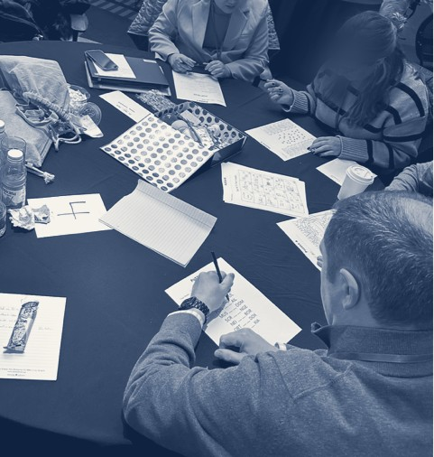
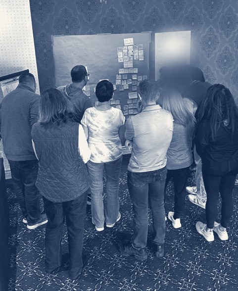
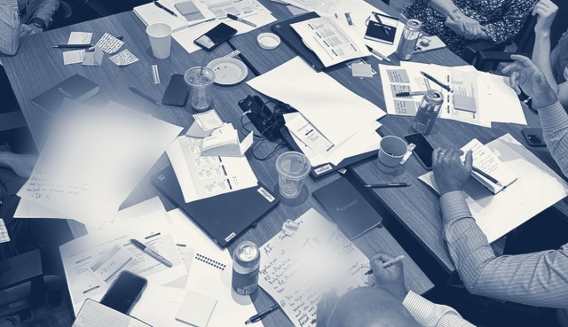

Our team
Three people who have spent their careers in the gap between a good plan and the team that has to live it.
Every Season is delivered by this team, alongside a certified coaching partner matched to your organization.
Matt spent 25 years inside big, complicated organizations — Merck, biotech, healthcare — watching good strategy die in the gap between the plan and the people who had to live it. He's spent the years since designing and facilitating the workshops that close that gap instead. Unmute is what happens when that instinct gets pointed at something smaller and more human: not the whole org chart, just the team in front of you.
Claudia builds the systems that let founders stop holding everything together by hand. She's been the fractional COO, the operations lead, the person who turns a good idea into a team that can actually run it, for companies across pharma, tech, and education. At Unmute, that's the part you don't see: the pricing, the plan, the operating rhythm that gets this from a good idea to a real business.
Alex has spent 15 years designing and running workshops that get a room full of skeptical people to actually talk to each other — first at Harvard, then across higher ed, healthcare, and the arts. At Unmute, she's the one making sure a Season actually lands with the team going through it, not just looks good on paper.
Who else you'll work with
Every Season includes coaching partners who work alongside your team throughout, turning what surfaces in the Moments into real conversation.


